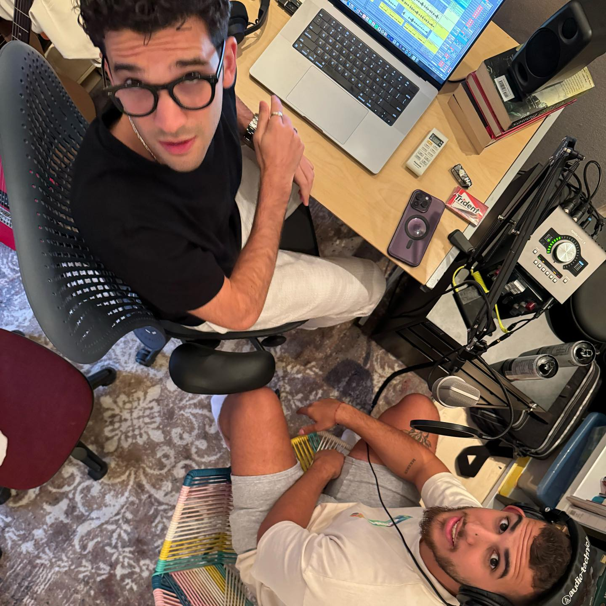

Alleh y Yorghaki son dos artistas venezolanos que están arrasando en el panorama musical en España, situando su tema capaz (merenguetón) del 20 de noviembre en los primeros puestos en las listas de ventas. Juntos han estrenado un álbum, LA CIUDAD, y entre las sorpresas que preparan para el futuro podrían encontrarse colaboraciones con Aitana o Lola Índigo.
Alleh y Yorghaki han conseguido darle un disco de platino en España a su gran éxito, capaz (merenguetón), con el que han alcanzado el primer puesto en la lista de las canciones más vendidas en el país en la semana del 3 al 9 de enero superando cualquier canción del ahora omnipresente Bad Bunny, tal y como informa El portal de Música.
Juntos, Alleh y Yorghaki estrenaron el 24 de diciembre un disco conjunto titulado LA CIUDAD, del que forma parte su gran éxito y otras canciones como el ingeniero, una noche, me late o ultravioleta. Así, entre TikTok, las plataformas de streaming y sus numerosas apariciones en las discotecas, han conseguido abrirse hueco por todo lo alto en la industria musical en España con capaz (merenguetón), un tema a medio camino entre el merengue y el reguetón.
En esa entrevista con GQ -publicada el 21 de enero- hablaron sobre sus influencias: «Cuando estábamos escribiendo el disco, componiendo y sacando la idea, La ciudad para nosotros representaba, aparte de la ciudad en sí, hablar de lo que uno vive en una ciudad y todo ese desarrollo. Es la idea de no tenerle miedo a amar y buscar la manera de describir en las canciones lo que significa amar, lo que significa conocer a alguien, lo que significa conocerte a ti mismo… En la composición hay muchas influencias, como Reik, Sin Bandera, Camila…, que son bandas que explican demasiado bien lo que significa amar, ¿cierto? Eso por mi lado. Por el lado de Alleh, que viene de otra generación, que escucha música más moderna, más reggaetón, más lo actual, es como fusionar un poquito las dos generaciones, lo que es el pop latino, la balada y el reggaetón y la música moderna. Siento que eso fue lo que ayudó a que llegáramos a ese sonido y a esa narrativa».